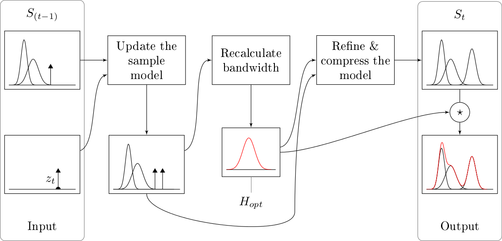

oKDE-Java
This is a Java implementation of the oKDE algorithm proposed by Matej Kristan (oKDE). This project is part of my master's thesis that uses the oKDE algorithm to estimate a model of human mobility and exploits the estimated model to predict future locations of human individuals (Location Prediction Based on Mobility Patterns in Location Histories: git repository).
oKDE Algorithm
Given a set of n-dimensional samples, this algorithm estimates the distribution of the samples using kernel density estimation. The output model is a Mixture of Gaussians. Moreover, the model is compressed and can be updated as new samples arrive.
The basic principle of the oKDE algorithm is summarized by this graphic:

For more details see (oKDE).
Build Instructions
Just execute ant in project root to compile the project:
$ ant
Afterwards, the packed jar file can be found in the dist-folder.
Quickstart
Here you can find a simple example that uses oKDE-Java to estimate a distribution of randomly generated samples. This example illustrates the basic usage of oKDE-java.
To use oKDE-Java in another project just include the jar file (see above how to build).
External Libraries Used
The following libraries are used in oKDE-Java:
- EJML v0.24,
a linear algebra library for manipulating dense matrices
License: Apache v2.0
License
This project is under the MIT License (MIT).